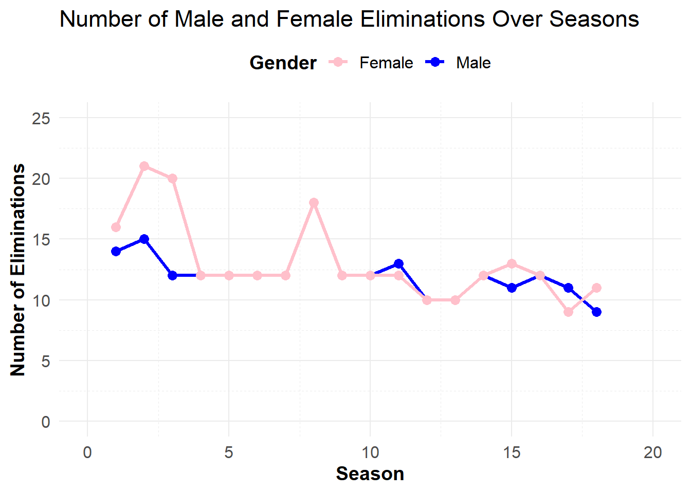
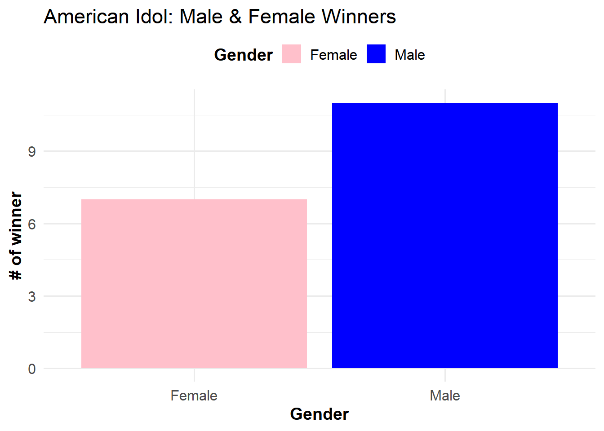
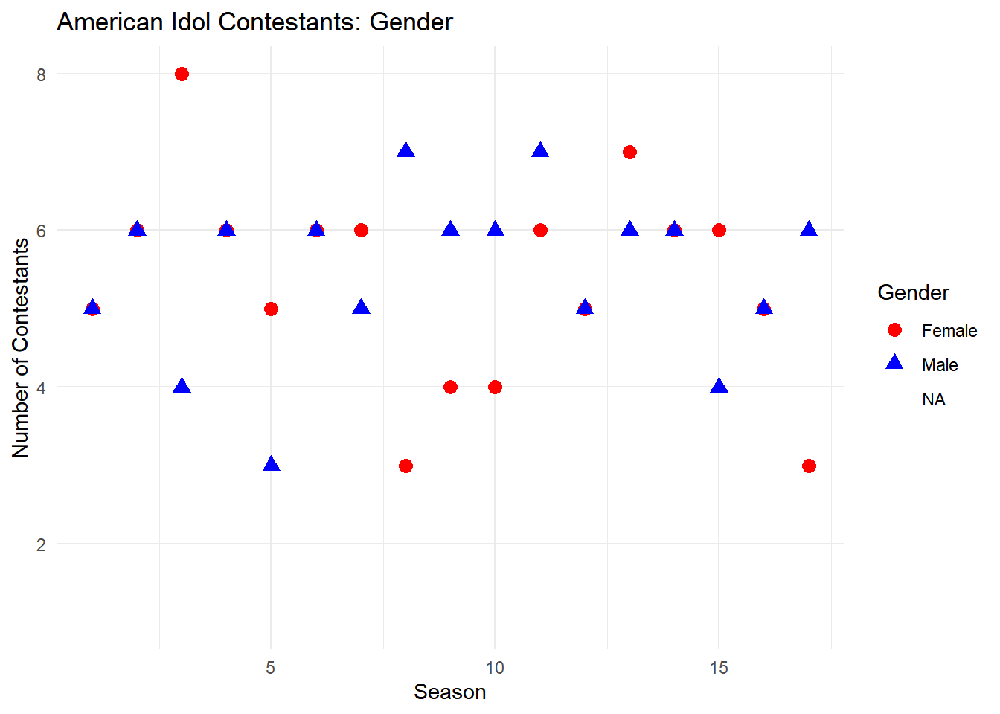

This report analyzes the American Idol dataset to explore gender representation among finalists and winners and to investigate any trends or patterns over different seasons. The dataset includes information on eliminations, finalists, seasons, and can be found - Tidy Tuesday Exercise.
Questions:Who is more likely to win the next seasons, a male or a female?
Load Libraries and Data
# Load necessary librarieslibrary(rlang)
Warning: package 'rlang' was built under R version 4.3.3
library(tidyverse)
Warning: package 'ggplot2' was built under R version 4.3.3
Warning: package 'tidyr' was built under R version 4.3.3
Warning: package 'dplyr' was built under R version 4.3.3
library(rsample) # For data splittinglibrary(caret) # For model training
Warning: package 'caret' was built under R version 4.3.3
Loading required package: lattice
Attaching package: 'caret'
The following objects are masked from 'package:yardstick':
precision, recall, sensitivity, specificity
The following object is masked from 'package:purrr':
lift
library(glmnet) # For Ridge and Elastic Net
Warning: package 'glmnet' was built under R version 4.3.3
Loading required package: Matrix
Attaching package: 'Matrix'
The following objects are masked from 'package:tidyr':
expand, pack, unpack
Loaded glmnet 4.1-8
library(nnet) # For Neural Networklibrary(earth) # For MARS
Warning: package 'earth' was built under R version 4.3.3
Loading required package: Formula
Loading required package: plotmo
Warning: package 'plotmo' was built under R version 4.3.3
Loading required package: plotrix
Warning: package 'plotrix' was built under R version 4.3.2
Attaching package: 'plotrix'
The following object is masked from 'package:scales':
rescale
library(e1071) # For SVM
Attaching package: 'e1071'
The following object is masked from 'package:tune':
tune
The following object is masked from 'package:rsample':
permutations
The following object is masked from 'package:parsnip':
tune
library(pROC) # For evaluation metrics
Warning: package 'pROC' was built under R version 4.3.3
Type 'citation("pROC")' for a citation.
Attaching package: 'pROC'
The following objects are masked from 'package:stats':
cov, smooth, var
# Define file paths and load dataeliminations <-read_csv(here::here("tidytuesday-exercise", "eliminations.csv"))
Rows: 456 Columns: 46
── Column specification ────────────────────────────────────────────────────────
Delimiter: ","
chr (44): place, gender, contestant, top_36, top_36_2, top_36_3, top_36_4, t...
dbl (1): season
lgl (1): comeback
ℹ Use `spec()` to retrieve the full column specification for this data.
ℹ Specify the column types or set `show_col_types = FALSE` to quiet this message.
Rows: 190 Columns: 7
── Column specification ────────────────────────────────────────────────────────
Delimiter: ","
chr (6): Contestant, Birthday, Birthplace, Hometown, Description, Contestant...
dbl (1): Season
ℹ Use `spec()` to retrieve the full column specification for this data.
ℹ Specify the column types or set `show_col_types = FALSE` to quiet this message.
Rows: 18 Columns: 12
── Column specification ────────────────────────────────────────────────────────
Delimiter: ","
chr (10): winner, runner_up, original_release, original_network, hosted_by, ...
dbl (2): season, no_of_episodes
ℹ Use `spec()` to retrieve the full column specification for this data.
ℹ Specify the column types or set `show_col_types = FALSE` to quiet this message.
# Clean column nameseliminations <-clean_names(eliminations)finalists <-clean_names(finalists)seasons <-clean_names(seasons)# Display the first few rows and summary of each datasethead(eliminations)
# A tibble: 6 × 7
contestant birthday birthplace hometown description season contestant_gender
<chr> <chr> <chr> <chr> <chr> <dbl> <chr>
1 Kelly Clark… 24-Apr-… Fort Wort… Burleso… "She perfo… 1 Female
2 Justin Guar… 28-Oct-… Columbus,… Doylest… "He perfor… 1 Male
3 Nikki McKib… 28-Sep-… Grand Pra… <NA> "She had p… 1 Female
4 Tamyra Gray 26-Jul-… Takoma Pa… Atlanta… "She had a… 1 Female
5 R. J. Helton 17-May-… Pasadena,… Cumming… "J. Helton… 1 Male
6 Christina C… 21-Jun-… Brooklyn,… <NA> ".Christin… 1 Female
head(seasons)
# A tibble: 6 × 12
season winner runner_up original_release original_network hosted_by judges
<dbl> <chr> <chr> <chr> <chr> <chr> <chr>
1 1 Kelly Cla… Justin G… June 11 (2002-0… Fox Ryan Sea… Paula…
2 2 Ruben Stu… Clay Aik… January 21 (200… Fox Ryan Sea… Paula…
3 3 Fantasia … Diana De… January 19 (200… Fox Ryan Sea… Paula…
4 4 Carrie Un… Bo Bice January 18 (200… Fox Ryan Sea… Paula…
5 5 Taylor Hi… Katharin… January 17 (200… Fox Ryan Sea… Paula…
6 6 Jordin Sp… Blake Le… January 16 (200… Fox Ryan Sea… Paula…
# ℹ 5 more variables: no_of_episodes <dbl>, finals_venue <chr>, mentor <chr>,
# winner_gender <chr>, runner_up_winner <chr>
# In case these files need to be read.#songs <- read_csv(here::here("data", "songs.csv"))#auditions <- read_csv(here::here("data", "auditions.csv"))#ratings <- read_csv(here::here("data", "ratings.csv"))
Eliminations Analysis
# Calculate gender ratios for eliminations by seasoneliminations_gender_ratio <- eliminations %>%group_by(season) %>%summarize(male_eliminations =sum(gender =="Male", na.rm =TRUE),female_eliminations =sum(gender =="Female", na.rm =TRUE) ) %>%mutate(gender_ratio = male_eliminations / (female_eliminations +1)) # Adding 1 to avoid division by zero# Display the gender ratioprint(eliminations_gender_ratio)
# Plot the number of male and female eliminations over seasonsggplot(eliminations_gender_ratio, aes(x = season)) +geom_line(aes(y = male_eliminations, color ="Male"), size =1.2) +# Make lines boldergeom_line(aes(y = female_eliminations, color ="Female"), size =1.2) +# Make lines boldergeom_point(aes(y = male_eliminations, color ="Male"), size =3) +# Adjust point sizegeom_point(aes(y = female_eliminations, color ="Female"), size =3) +# Adjust point sizelabs(title ="Number of Male and Female Eliminations Over Seasons",x ="Season",y ="Number of Eliminations",color ="Gender"# Customize legend title ) +scale_color_manual(values =c("Male"="blue", "Female"="pink")) +scale_x_continuous(limits =c(0, 20)) +# Set x-axis limitsscale_y_continuous(limits =c(0, 25)) +# Set y-axis limitstheme_minimal(base_size =14) +# Use minimal theme with larger base sizetheme(legend.position ="top", # Position the legend at the toplegend.title =element_text(face ="bold"), # Bold the legend titlelegend.text =element_text(size =12), # Adjust legend text sizeaxis.title.x =element_text(face ="bold"), # Bold x-axis titleaxis.title.y =element_text(face ="bold"), # Bold y-axis titleaxis.text =element_text(size =12), # Adjust axis text sizepanel.grid.major =element_line(size =0.5, linetype ="solid"), # Adjust grid line sizepanel.grid.minor =element_line(size =0.25, linetype ="dashed") # Adjust grid line size )
Warning: Using `size` aesthetic for lines was deprecated in ggplot2 3.4.0.
ℹ Please use `linewidth` instead.
Warning: The `size` argument of `element_line()` is deprecated as of ggplot2 3.4.0.
ℹ Please use the `linewidth` argument instead.

Conclusion:
The elimination data indicates a generally balanced gender ratio across most seasons, with some variability. This suggests that, in terms of eliminations, there is no strong evidence that one gender is systematically favored or disadvantaged.
Winners
# Aggregate the count of male and female winnerswinner_counts <- seasons %>%group_by(winner_gender) %>%summarize(count =n(), .groups ='drop')# Print the winner counts to verifyprint(winner_counts)
# A tibble: 2 × 2
winner_gender count
<chr> <int>
1 Female 7
2 Male 11
# Create a bar graph of the number of winners by genderggplot(winner_counts, aes(x = winner_gender, y = count, fill = winner_gender)) +geom_bar(stat ="identity") +labs(title ="American Idol: Male & Female Winners",x ="Gender",y ="# of winner",fill ="Gender"# Change legend title to "Gender" ) +scale_fill_manual(values =c("Male"="blue", "Female"="pink")) +theme_minimal(base_size =14) +# Use minimal theme with larger base sizetheme(legend.position ="top", # Position the legend at the toplegend.title =element_text(face ="bold"), # Bold the legend titlelegend.text =element_text(size =12), # Adjust legend text sizeaxis.title.x =element_text(face ="bold"), # Bold x-axis titleaxis.title.y =element_text(face ="bold"), # Bold y-axis titleaxis.text =element_text(size =12) # Adjust axis text size )

Conclusion:
The American Idol data reveals that out of the 18 seasons analyzed, 7 winners were female and 11 winners were male. This suggests that males have historically been more likely to win the competition compared to females.
Contestants
# Count the number of contestants by season and gendercontestants_by_gender <- finalists %>%group_by(season, contestant_gender) %>%summarize(count =n(), .groups ='drop')# Display the summarized dataprint(contestants_by_gender)
# A tibble: 37 × 3
season contestant_gender count
<dbl> <chr> <int>
1 1 Female 5
2 1 Male 5
3 2 Female 6
4 2 Male 6
5 3 Female 8
6 3 Male 4
7 4 Female 6
8 4 Male 6
9 5 Female 5
10 5 Male 3
# ℹ 27 more rows
# Create a scatter plot of the number of contestants by gender and seasonggplot(contestants_by_gender, aes(x = season, y = count, color = contestant_gender, shape = contestant_gender)) +geom_point(size =3) +labs(title ="American Idol Contestants: Gender",x ="Season",y ="Number of Contestants",color ="Gender",shape ="Gender") +scale_color_manual(values =c("Male"="blue", "Female"="red")) +theme_minimal()
Warning: Removed 3 rows containing missing values or values outside the scale range
(`geom_point()`).

Observations:
Across the 17 seasons, there were several seasons with a balanced number of male and female contestants.
Some seasons showed a slight imbalance, such as Season 3 with more females (8) than males (4) and Season 8 with more males (7) than females (3).
Model Fitting
# Load necessary librarieslibrary(tidymodels)library(dplyr)# Prepare data for modelingseasons_clean <- seasons %>%mutate(winner_gender =as.factor(winner_gender),original_network =as.factor(original_network),hosted_by =as.factor(hosted_by),judges =as.factor(judges),finals_venue =as.factor(finals_venue),mentor =as.factor(mentor))
# Split data into training and testing setsset.seed(123) # For reproducibilitydata_split <-initial_split(seasons_clean, prop =0.8, strata = winner_gender)train_data <-training(data_split)test_data <-testing(data_split)# Create a recipe for preprocessingrecipe <-recipe(winner_gender ~ season + original_network + hosted_by + judges + no_of_episodes + finals_venue + mentor, data = train_data) %>%step_dummy(all_nominal(), -all_outcomes()) %>%# Convert categorical variables to dummy variablesstep_zv(all_predictors()) %>%# Remove zero variance predictorsstep_impute_median(all_predictors()) %>%# Impute missing valuesstep_scale(all_predictors()) %>%# Scale predictorsstep_center(all_predictors()) # Center predictors
# Fit models with cross-validationcv_folds <-vfold_cv(train_data, v =5, strata = winner_gender)log_reg_fit <- log_reg_workflow %>%fit_resamples(cv_folds)
→ A | warning: ! There are new levels in a factor: `NA`.
There were issues with some computations A: x1
→ B | warning: ! There are new levels in a factor: `NA`., prediction from rank-deficient fit; attr(*, "non-estim") has doubtful cases
There were issues with some computations A: x1
→ C | warning: glm.fit: fitted probabilities numerically 0 or 1 occurred
There were issues with some computations A: x1
There were issues with some computations A: x5 B: x5 C: x2
rf_fit <- rf_workflow %>%fit_resamples(cv_folds)
Warning: package 'ranger' was built under R version 4.3.3
→ A | warning: ! There are new levels in a factor: `NA`.
There were issues with some computations A: x1
There were issues with some computations A: x10
→ A | warning: ! There are new levels in a factor: `NA`.
There were issues with some computations A: x5
There were issues with some computations A: x10
# Select the best model (e.g., Random Forest)final_rf_model <- rf_workflow %>%fit(train_data)
Warning: ! There are new levels in a factor: `NA`.
! There are new levels in a factor: `NA`.
# Predict on the test setpredictions <-predict(final_rf_model, test_data) %>%bind_cols(test_data) # Merge predictions with test_data
Warning: ! There are new levels in a factor: `NA`.
# Rename the prediction column to '.pred_class' for consistencypredictions <- predictions %>%rename(.pred_class = .pred_class)
# Evaluate predictionsmetrics_test <-metrics(predictions, truth = winner_gender, estimate = .pred_class)print(metrics_test)
# A tibble: 2 × 3
.metric .estimator .estimate
<chr> <chr> <dbl>
1 accuracy binary 0.8
2 kap binary 0.545
Conclusion:
Random Forest (RF):
Accuracy: 60% is the same as Logistic Regression, but RF has a lower Brier score (better) and a higher ROC AUC, indicating it has better performance in distinguishing between classes compared to Logistic Regression.
Brier Class Score: The lower score means RF provides better probabilistic predictions than Logistic Regression.
ROC AUC: RF’s higher ROC AUC (0.70) shows better overall performance in class separation.
Logistic Regression (LogReg):
Accuracy: Matches Random Forest, but with a higher Brier score and lower ROC AUC.
Brier Class Score: Higher than RF, indicating less reliable probability estimates.
ROC AUC: Lower than RF, showing poorer performance in distinguishing between classes.
Support Vector Machine (SVM):
Accuracy: Lowest among the models at 53.33%.
Brier Class Score: Higher than RF and LogReg, indicating less reliable probability estimates.
ROC AUC: Very low at 0.10, suggesting that SVM performs poorly in distinguishing between classes.
In other words the best model is the Random Forest which seems to be the most effective model overall, with the highest ROC, AUC and lower Brier score, showing strong performance on the test set with an accuracy of 80% and a moderate Kappa score.
Summary:
This analysis has shown that males have historically been more likely to win American Idol, with Random Forest emerging as the most accurate model for predicting winners based on the available data. The gender ratio among eliminations and finalists does not strongly favor either gender, but the winning trend shows a slight male advantage.
Future Work
Future research could delve into other factors such as judging patterns, audience reactions, and additional contestant characteristics to further understand their impact on the likelihood of winning.